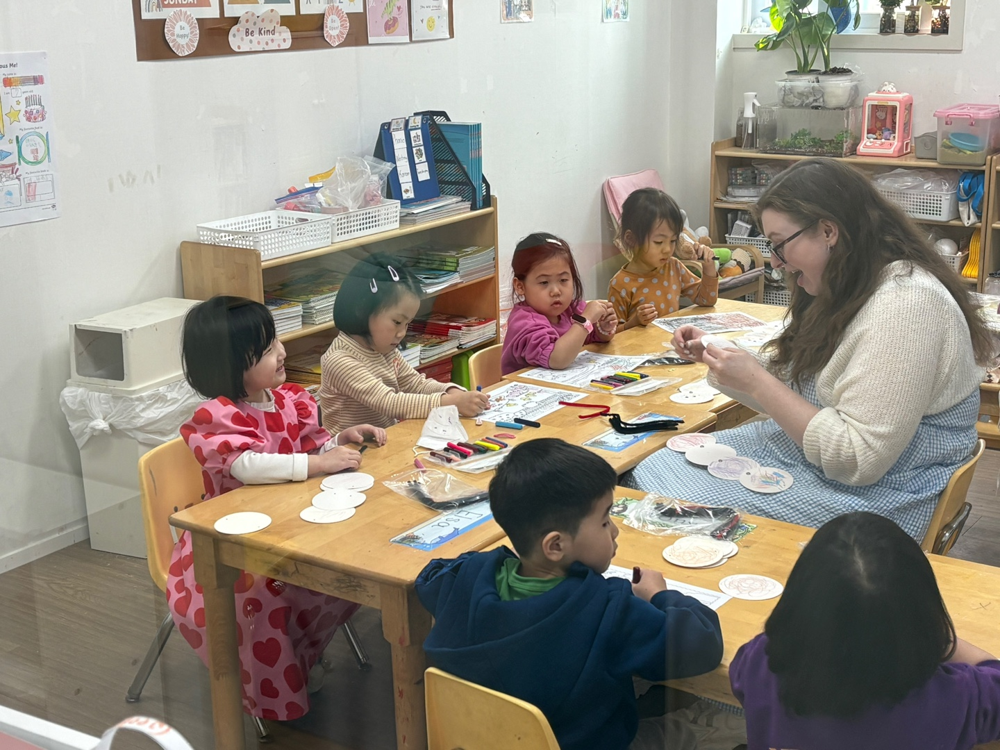
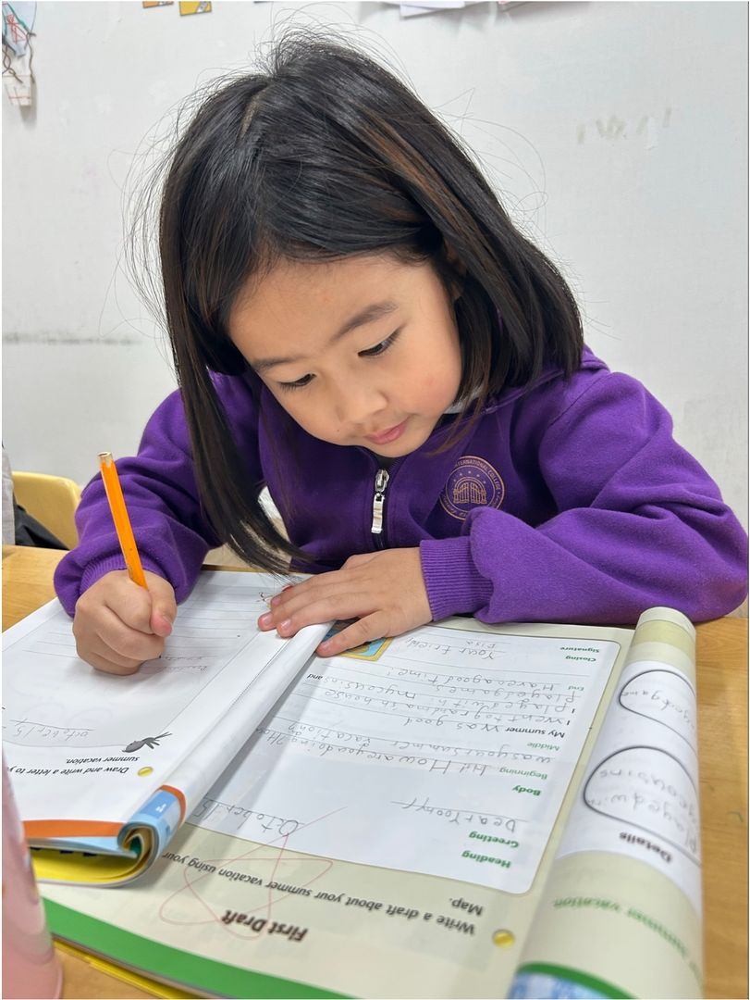

Why DEWFORD
영어로 이해하고, 생각하고, 표현하는
아이
좋은 영어교육은 아이가 배운 언어를 실제로 사용할 수 있도록 돕습니다.
DEWFORD는 읽기와 문해력을 중심으로 질문하고 탐구하며,
생각을 자신의 말과 글로 표현하는 경험을 제공합니다.
아이의 발달 단계와 Reading·Phonics 수준을 함께 살피고,
현재의 출발점에서 한 단계씩 성장하도록 지원합니다.
DEWFORD는 읽기와 문해력을 중심으로 질문하고 탐구하며,
생각을 자신의 말과 글로 표현하는 경험을 제공합니다.
아이의 발달 단계와 Reading·Phonics 수준을 함께 살피고,
현재의 출발점에서 한 단계씩 성장하도록 지원합니다.


THE DEWFORD DIFFERENCE
DEWFORD의 네 가지 약속
Individual
Learning
연령에 따른 발달과 영어 수준을 함께 고려합니다. 교사는 아이의 학습 과정을 관찰하고 필요한 지원을 조정합니다.
Literacy-Based
Learning
Phonics에서 Reading, Vocabulary, Writing, Speaking까지 연결하며 읽고 이해하는 힘을 학습의 중심에 둡니다.
Inquiry-Based
Learning
아이의 질문에서 시작해 탐색하고, 토론하고, 협력하며 세상에 대한 이해를 넓힙니다.
Small Class
Environment
소규모 학습 환경에서 학생 한 명 한 명과 소통하고, 각자의 생각을 표현할 기회를 제공합니다.

LEARNING JOURNEY
모든 아이의 출발점은 다릅니다.
아이의 학습 단계에 맞는 안내를 확인해 주세요. 현재의 영어 경험과 관심사를 나누며 프로그램을 상담해 보세요.